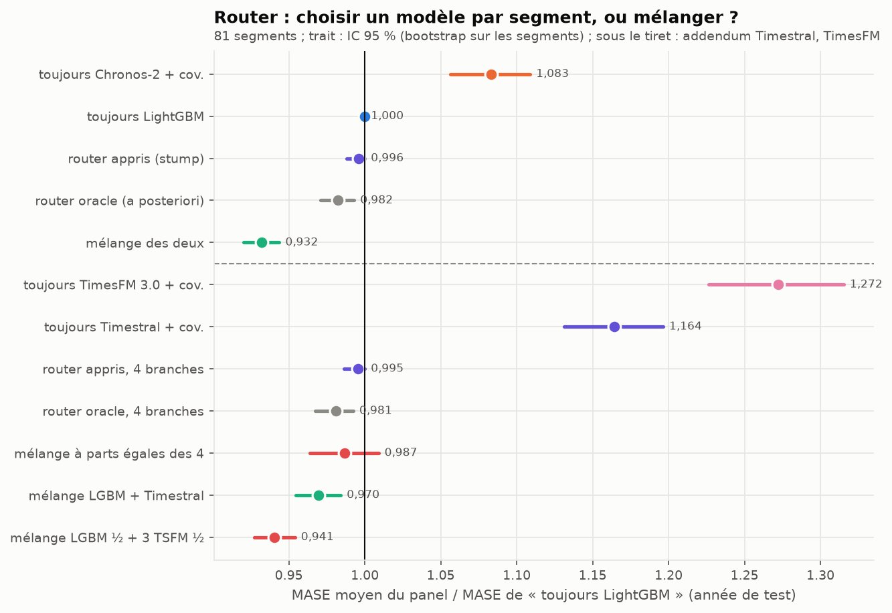
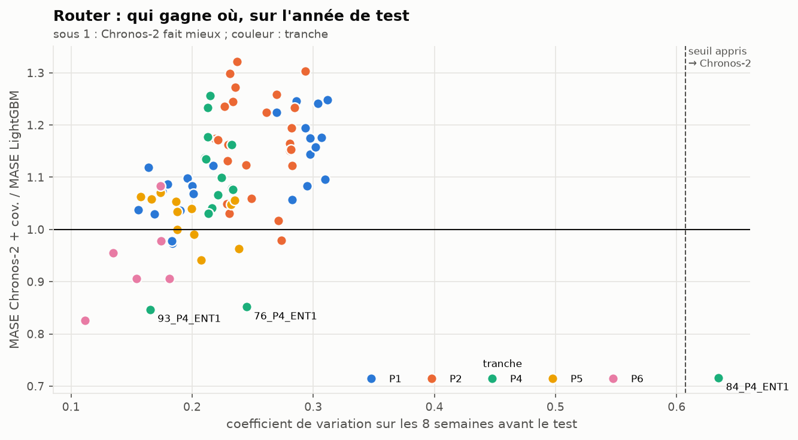
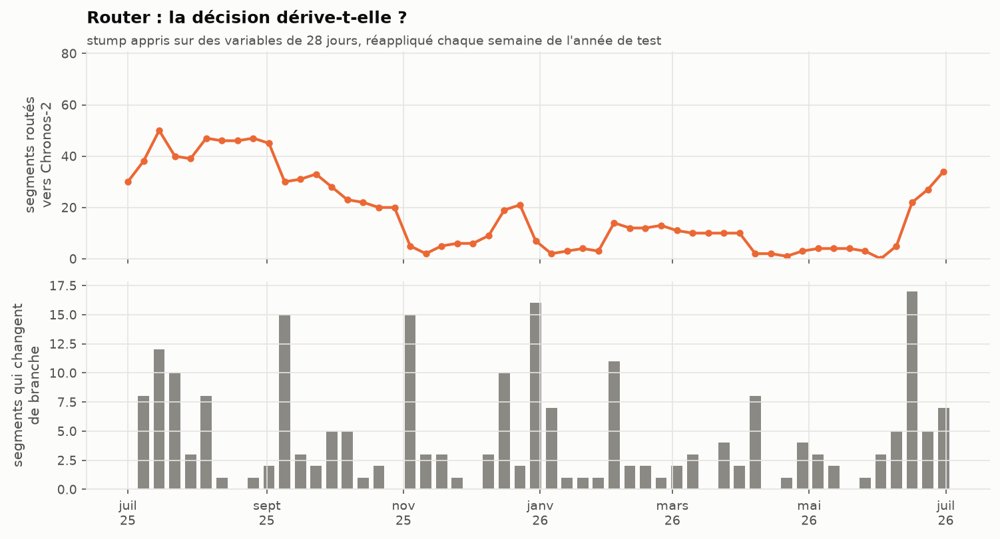
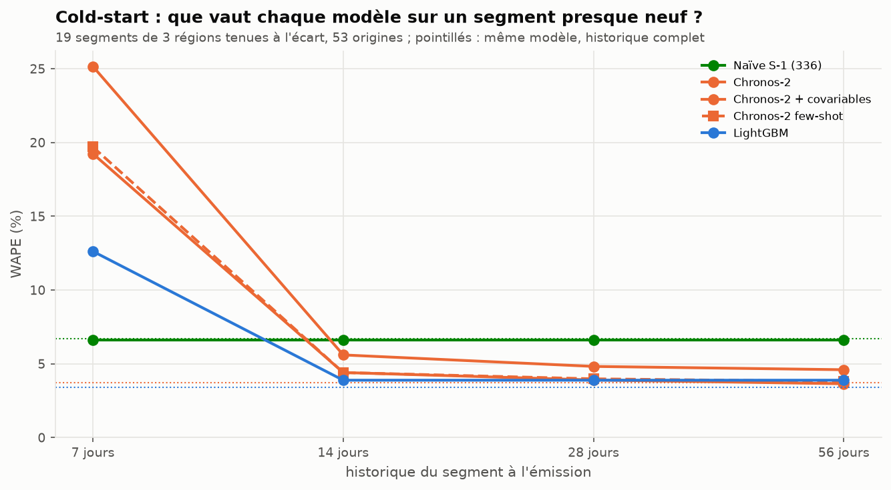
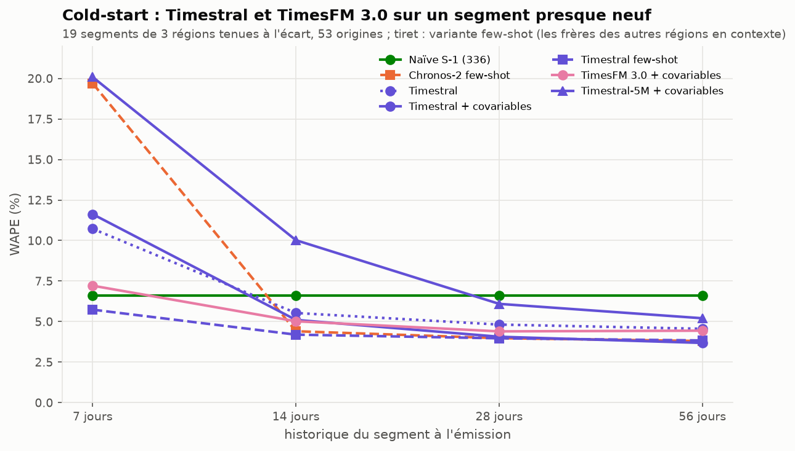

Router et cold-start
Deux questions du brief (bloc B) sur le panel des 81 segments tertiaires Enedis : 1. Complexity Router. Faut-il, segment par segment, choisir entre le spécialiste (LightGBM) et le TSFM (Chronos-2 + covariables) ? 2. Cold-start. Que vaut chaque modèle quand un segment n’a que quelques jours d’historique, et le « few-shot in-context » de Chronos-2 aide-t-il ?
Commandes : uv run flexgrid router, uv run flexgrid coldstart, puis uv run flexgrid figures-router. Nombres : results/router_summary.json, results/router_units.csv, results/router_drift.csv, results/coldstart_summary.csv. L’addendum du 2026-10-16 (Timestral, TimesFM 3.0) est en section 3 ; il ne change aucun nombre des sections 1 et 2.
1. Le router
Ce qui a été pré-enregistré
- Unités : les 81 segments du panel (le portefeuille FlexGrid est exclu, il sert au verdict).
- Variables ex-ante, calculées sur les 8 semaines qui précèdent la période routée : nombre de sites, puissance moyenne, force des saisonnalités journalière et hebdomadaire, coefficient de variation, bruit de la naïve, sensibilité à la température.
- Étiquette : la branche au MASE moyen le plus bas sur la fenêtre de validation (janvier-juin 2025).
- Modèle de routage : un stump (une variable, un seuil), appris sur la validation, appliqué tel quel au test. Un stump plutôt qu’un arbre : 81 unités ne permettent pas d’en apprendre plus sans sur-apprendre.
- Politiques comparées sur l’année de test : toujours LightGBM, toujours Chronos-2, le stump, l’oracle (la meilleure branche a posteriori, une borne qu’aucune politique ne peut dépasser) et le mélange des deux.
Le résultat : mélanger bat choisir, même en trichant

| Politique (MASE moyen / toujours LightGBM) | ratio | IC 95 % |
|---|---|---|
| toujours Chronos-2 + covariables | 1,083 | [1,056 ; 1,109] |
| router appris (stump) | 0,996 | [0,988 ; 1,000] |
| router oracle (a posteriori) | 0,982 | [0,971 ; 0,993] |
| mélange des deux | 0,932 | [0,920 ; 0,944] |
- Le stump appris route un seul segment vers Chronos-2 (coefficient de variation ≥ 0,61 : 84_P4_ENT1). Il gagne 0,4 % sur « toujours LightGBM ».
- Même le router oracle, qui connaît la bonne réponse, ne gagne que 1,8 %. Le plafond du routage est bas : LightGBM a le MASE moyen le plus bas sur 66 segments sur 81, et là où Chronos-2 gagne, il gagne peu.
- Le mélange gagne 6,8 %, quatre fois l’oracle. Il bat l’oracle sur 70 segments sur 81. Deux modèles qui se trompent à des moments différents se corrigent l’un l’autre dans le temps, alors qu’un router ne peut choisir qu’une fois par segment.
Qui gagne où

En MASE, Chronos-2 fait mieux que LightGBM sur 15 segments (12 en MAPE, bloc C). Ce ne sont pas des segments au hasard : les trois segments P4 chauffés à l’électricité (84, 76, 93_P4_ENT1, ceux du bloc A) et 5 des 6 segments P6 (les plus gros sites). Ce sont les segments dont la forme change le plus avec la saison. Le stump n’en attrape qu’un : les deux autres P4 ont un coefficient de variation banal sur les 8 semaines d’hiver-printemps qui précèdent le test. Les variables pré-enregistrées décrivent mal ce qui fait gagner Chronos-2.
La décision dérive-t-elle ?

Le brief demande de suivre « la distribution des routes et le taux de bascule ». Le stump appris sur des variables de 28 jours (la variable retenue devient la force de la saisonnalité journalière), réappliqué chaque semaine, envoie entre 0 et 50 segments vers Chronos-2 selon la saison (médiane 12). En moyenne, 4,3 segments changent de branche chaque semaine, et jusqu’à 17. Une décision qui bascule avec la saison n’est pas une propriété du segment : c’est une raison de plus de mélanger plutôt que de router.
Ce qu’on retient
Pour ce panel, le router n’apporte rien de mesurable et ajoute une décision à surveiller. Le service nomme donc le mélange (bloc D). La leçon rejoint W25 : la question « TSFM ou spécialiste ? » a souvent pour meilleure réponse « les deux ».
2. Le cold-start
Le protocole
On ne peut pas observer de vrais nouveaux sites : on les simule. Trois régions (Pays de la Loire, Bretagne, Nouvelle-Aquitaine, soit 19 segments) sont tenues à l’écart. Un jour sur sept de l’année de test (53 origines), leur historique est coupé à 7, 14, 28 ou 56 jours avant l’émission. LightGBM est appris sur les autres régions seulement : il n’a jamais vu ces segments. Le « few-shot in-context » est Chronos-2 en cross_learning : le lot contient le segment tronqué et ses « frères » des autres régions (même tranche, même profil) avec leur historique complet, tous coupés au même instant.
Le résultat

| WAPE | 7 jours | 14 jours | 28 jours | 56 jours | historique complet |
|---|---|---|---|---|---|
| Naïve S-1 | 6,6 % | 6,6 % | 6,6 % | 6,6 % | 6,7 % |
| LightGBM (jamais vu le segment) | 12,6 % | 3,9 % | 3,9 % | 3,9 % | 3,4 % |
| Chronos-2 + covariables | 19,2 % | 4,4 % | 3,9 % | 3,6 % | 3,7 % |
| Chronos-2 few-shot in-context | 19,7 % | 4,4 % | 4,0 % | 3,8 % | (non simulé) |
| Chronos-2 sans covariables | 25,2 % | 5,6 % | 4,8 % | 4,6 % | (non simulé) |
| Mélange | 3,1 % |
- Avec 7 jours d’historique, la naïve gagne, et de loin. Ce n’est pas un bug, on l’a vérifié cas par cas. Une semaine de contexte ne contient qu’un cycle hebdomadaire : Chronos-2 ne reconnaît pas la semaine comme une saison et prévoit un mardi à mi-chemin entre un jour ouvré et un dimanche : de 8 h à 19 h, sa prévision est 25 % sous le réalisé (33 % sans covariables). LightGBM a besoin d’un retard de 14 jours qu’il n’a pas : il reçoit une valeur manquante qu’il n’a jamais vue à l’apprentissage, et sous-prévoit de 13 %. La naïve, elle, recopie exactement le bon jour. Un nouveau site se nomme d’abord à la naïve.
- Dès 14 jours, LightGBM appris sur les autres régions est devant (3,9 %), à 0,5 point de ce qu’il fait avec tout l’historique. Un modèle global n’a besoin que de ses retards : 14 jours lui suffisent.
- Chronos-2 rattrape à 28-56 jours. À 56 jours, il a tout son contexte (2 048 pas, soit 42,7 jours) et fait aussi bien qu’en backtest (3,6 % contre 3,7 %).
- Le few-shot in-context n’aide pas. Donner à Chronos-2 les segments frères des autres régions ne change rien à 14 jours et dégrade légèrement à 28 et 56 jours. Le brief proposait le few-shot comme réponse au cold-start. Sur ce panel, la réponse est une naïve pendant deux semaines, puis le modèle global.
Les ratios de WAPE contre la naïve, avec IC 95 % (bootstrap sur les 53 origines), sont dans results/coldstart_summary.csv. À 14 jours : LightGBM 0,59 [0,48 ; 0,72], Chronos-2 + covariables 0,67 [0,55 ; 0,81].
Limite : les segments sont des agrégats de centaines de sites. Un vrai nouveau site isolé est bien plus bruité, et la naïve y serait sans doute moins bonne. Ce qui est simulé ici, c’est l’arrivée d’un nouveau portefeuille.
3. Addendum du 2026-10-16 : Timestral et TimesFM 3.0
Commandes : uv run flexgrid router (les politiques à quatre branches sont calculées avec les autres) et uv run flexgrid coldstart --addendum. Même panel, mêmes variables, mêmes origines que ci-dessus.
Un router à quatre branches
Branches : LightGBM, Chronos-2, Timestral-209M et TimesFM 3.0, chacun avec météo et calendrier. Le stump coupe les segments en deux groupes et donne à chacun la branche au MASE le plus bas sur la validation (results/router_summary.json, clés stump4 et ratio_vs_always_lgbm).
| Politique (MASE moyen / toujours LightGBM) | ratio | IC 95 % |
|---|---|---|
| toujours TimesFM 3.0 + covariables | 1,272 | [1,226 ; 1,315] |
| toujours Timestral + covariables | 1,164 | [1,131 ; 1,196] |
| router appris, 4 branches | 0,995 | [0,986 ; 1,000] |
| router oracle, 4 branches | 0,981 | [0,967 ; 0,992] |
| mélange à parts égales des quatre | 0,987 | [0,964 ; 1,009] |
| mélange LightGBM + Timestral | 0,970 | [0,954 ; 0,984] |
| mélange LightGBM ½ + trois TSFM ⅙ | 0,941 | [0,927 ; 0,954] |
| mélange LightGBM + Chronos-2 (section 1) | 0,932 | [0,920 ; 0,944] |
- Le stump à quatre branches choisit le même seuil que celui à deux (coefficient de variation ≥ 0,61) et envoie le même segment, 84_P4_ENT1, vers Timestral au lieu de Chronos-2. Les 80 autres restent à LightGBM.
- Sur l’année de test, la meilleure branche a posteriori est LightGBM pour 66 segments, Chronos-2 pour 12, Timestral pour 2 et TimesFM 3.0 pour 1 (
results/router_units.csv). Deux branches de plus montent l’oracle de 0,982 à 0,981 : le plafond du routage ne bouge pas. - Sur le panel, Timestral et TimesFM font moins bien que Chronos-2 (MAE de 4,12 et 4,58 MW contre 3,88,
results/summary_panel.csv), et aucun mélange qui les contient ne bat le mélange d’origine.
Cold-start : le few-shot de Timestral aide à 7 jours
Timestral accepte des covariables passées qui ne sont pas des séries du lot : les frères du segment (même tranche et profil, autres régions) entrent comme covariables passées, avec leur historique complet, et la cible tronquée est complétée à gauche par des valeurs manquantes. TimesFM 3.0 exige des covariables de la longueur de la cible : pas de few-shot pour lui.

| WAPE | 7 jours | 14 jours | 28 jours | 56 jours | historique complet |
|---|---|---|---|---|---|
| Naïve S-1 | 6,6 % | 6,6 % | 6,6 % | 6,6 % | 6,7 % |
| LightGBM (section 2) | 12,6 % | 3,9 % | 3,9 % | 3,9 % | 3,4 % |
| Chronos-2 few-shot (section 2) | 19,7 % | 4,4 % | 4,0 % | 3,8 % | |
| Timestral few-shot | 5,7 % | 4,2 % | 4,0 % | 3,8 % | |
| Timestral + covariables | 11,6 % | 5,1 % | 4,1 % | 3,7 % | 3,8 % |
| Timestral sans covariables | 10,7 % | 5,5 % | 4,8 % | 4,6 % | 4,6 % |
| TimesFM 3.0 + covariables | 7,2 % | 5,0 % | 4,4 % | 4,4 % | 4,3 % |
| Timestral-5M + covariables (CPU) | 20,1 % | 10,0 % | 6,1 % | 5,2 % | 5,7 % |
- À 7 jours, Timestral few-shot est le seul modèle sous la naïve : WAPE de 5,7 % contre 6,6 %. Le ratio, 0,87 [0,73 ; 1,04], ne permet pas de conclure qu’il la bat, mais c’est le premier modèle qui ne s’effondre pas : Chronos-2 few-shot est à 19,7 % (2,97 fois la naïve). Le frère apporte la forme hebdomadaire qu’une semaine de contexte ne contient pas. Timestral sans frères, lui, est à 11,6 %.
- TimesFM 3.0 se défend aussi à 7 jours (7,2 %, ratio 1,09 [0,94 ; 1,28]) sans frères.
- Dès 14 jours, LightGBM appris sur les autres régions reste devant (3,9 % contre 4,2 % pour Timestral few-shot ; ratios 0,59 et 0,63 contre la naïve, IC qui se chevauchent).
Ce qu’on retient : la règle de la section 2 (« la naïve pendant deux semaines, puis le modèle global ») tient. Timestral few-shot est la première alternative crédible à la naïve pour la première semaine ; il faudrait des segments plus petits, ou de vrais nouveaux sites, pour dire s’il la bat.